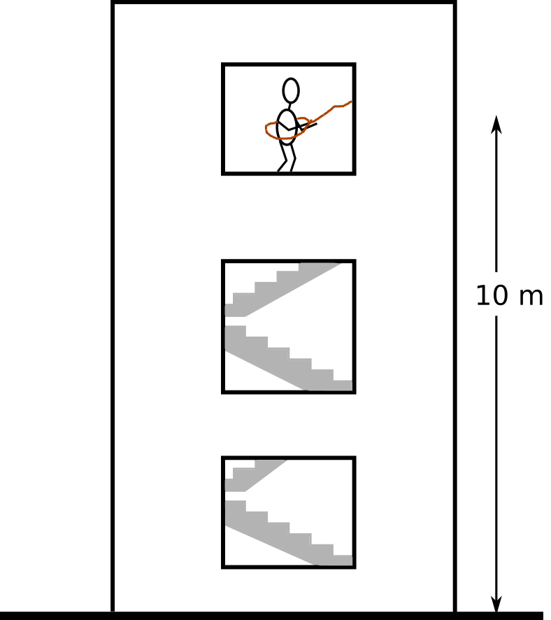

A cup of tea with Mr. Joule
I'm fascinated with Joule's experiment. Wikipedia says that it is not perhaps the first experiment demonstrating that heat and work are mutually interchangeable (see this page about Von Mayer), but nevertheless, the experiment is an excellent opening for thermodynamic lectures.

Mr. Joule put a mechanical mixer inside a bucket of water and isolated the whole system. Then he used the potential energy of a metal cylinder to rotate the mixer, which increases the temperature of water. He then apparently removed the isolation and let the system lose the gained heat and reach its original temperature. Then he asked himself (I guess):
I had potential energy in the metal cylinder, which I used to rotate the mixer. I converted the mechanical energy to heat, which I could measure as a higher temperature in the bucket of water. Later I removed the extra heat from the bucket by removing the isolation. In between, the bucket of water somehow stored that energy inside its belly. We can call it then the internal energy!
Of course I'm making it up. But who cares! I have learned from this amazing book that it is much better to keep the teaching material (profoundly) simple.
Usually I later ask students:
The metal cylinder is already fallen, and its potential energy is converted to heat and stored in the bucket of water. Assume there hasn't been any heat loss in the apparatus. Is it now possible to use that heat to move it back to its original position?
Last time, surprisingly, only a couple of students realized I'm talking about the second law of thermodynamics. So I decided to make this opening a bit more interesting, by doing some computations. Here's the problem: I want to have a cup of tea, but the only device that I have in my office is an ideal mixer similar to Mr. Joule's apparatus. My office is on the third floor and the only source of potential energy there is my own weight.

The question is, how many times do I need to jump to boil 1 liter of water? Let's list the assumptions:
- No energy loss in the apparatus (100% efficiency!)
- Specific heat capacity of water is 4200 J/kg/K
- Water is original at 20 degree Celsius
- Density of water is 1.0 kg/liter
- My weight is 80 kg (well 80+5 now that I only do mathematical modeling and programming)
- Acceleration due to gravity is 9.8 m/s^2
The problem can be formulated as follows: $$ n_{jump} m_{me} g \Delta z = m_{water}c_{p,water}(T-T_{init})$$
The number of jumps $n_jump$ then is calculated by: $$n_{jump} = \frac{m_{water}c_{p,water}(T-T_{init})}{m_{me} g \Delta z}$$
Let's do the calculation in the following Python cell:
m_water = 1.0 # kg
cp_water = 4200. # J/kg/K
dZ = 10. # m
g = 9.8 # m/s^2
m_me = 80 # kg
T_init = 20+273.15 # K
T_final = 100+273.15 # K
n_jump = (m_water*cp_water*(T_final-T_init))/(m_me*g*dZ)
print(n_jump)
The above simplified calculation tells me that I have to jump 43 times out of the window to make a cup of tea (well, technically 3 large cups of tea). In other words, I would have to jump 428 meters to provide enough heat to boil one liter of water.
Do not forget that the device that we use for making that cup of tea is 100% efficient.
Moving back to the office¶
Now, assume that on the last jump I hurt myself and now I cannot use the stairs anymore. Is the energy stored in 1 liter of boiling water enough to pull me to the office (not 43 times! only once)? In other words, is it possible to design a machine that extracts the heat (that was generated by jumping 43 times out of the window) and converts it to mechanical work to pull me back up? Sadi Carnot (almost) answered this question at the beginning of the 19th century.
Carnot asked himself a very interesting question: is it possible to convert all the heat generated from a the combustion of a fossil can be fully converted to mechanical work (i.e., movement) or there is a "natural limit" for this conversion? Asking this question at that time is a sign of genius, let alone answering it.
Carnot showed that there is indeed a natural limit for converting heat to the mechanical work. First of all, the heat needs to flow to a machine that converts it to work (here it is called a Carnot engine). This means that the machine must operate between a source at temperature $T_h$ to a sink at temperature $T_c$. From the amount of heat that flows from the heat source into the Carnot engine, only a certain fraction can be converted to mechanical work, that is calculated by $$\eta = 1-\frac{T_c}{T_h}.$$
This is called the Carnot efficiency. For any real life engine, the efficiency is always lower than the Carnot efficiency.
Let's assume that I have a Carnot engine. The only source of energy I have is the heat that can be extracted from a one liter of boiling water. I use this heat source, convert it to mechanical work and use it to pull myself back up. How far does it take me? This is the formulation: $$ \Delta z = \frac {(1-\frac{T_{init}}{T})m_{water}c_{p,water}(T-T_{init})}{m_{me}g} $$
dz = (1-T_init/T_final)*m_water*cp_water*(T_final-T_init)/(m_me*g)
print(dz)
This is indeed very interesting. It means that a Carnot engine would have easily taken me back upstairs. In fact there is enough energy to do the task 9 times.
What does the difference mean?¶
Let's recap: I jumped out of the window 43 times to boil water and the energy that was stored in the water could pull me back up only 9 times. In fact, we have lost something here. What we have lost is the quality of energy, by converting the (valuable) potential energy of my body weight to the low-quality heat stored in the boiling water. When Mr. Joule was encountered by this interpretation, he could not accept it (source):
I conceive that this theory ... is opposed to the recognised principles of philosophy because it leads to the conclusion that vis viva (energy) may be destroyed by an improper disposition of the apparatus: Thus Mr Clapeyron draws the inference that 'the temperature of the fire being 1000°C to 2000°C higher than that of the boiler there is an enormous loss of vis viva in the passage of the heat from the furnace to the boiler.' Believing that the power to destroy belongs to the Creator alone I affirm ... that any theory which, when carried out, demands the annihilation of force, is necessarily erroneous.
What we saw here is that the mechanical work can be converted to heat with 100% efficiency. But only a fraction of heat can be converted to mechanical energy (movement). That fraction can be calculated using the Carnot factor, and depends on the temperature of the heat source and the temperature of the environment. The amount of heat that is convertible to work is called exergy and the rest that cannot be converted is called anergy.
In our tea-making example, my potential energy could be fully converted to mechanical work (movement). But after converting it to heat by jumping down, only 9 of my 43 jumps survived as a source of energy that can be converted to work and the rest of the jumps lost their potential.